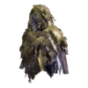
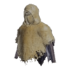
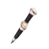

| Imagen | Nombre | Efecto | Duración | Recarga | Obtención |
|---|---|---|---|---|---|
|  | Manto de camuflaje | Te permite ocultarte de la visión del enemigo por un tiempo. El efecto se agota si lanzas un ataque o recibes algún daño. | 120 segundos | 300 segundos | Completa el Encargo 3★ Sombras en el pantano. |
| Manto planeador | Aumenta el tiempo en el aire en salto y permite planear con vientos fuertes. Facilita poder montar sobre monstruos. | 180 segundos | 120 segundos | Completa la Expedición en los Altiplanos Coralinos. | |
| Manto de vitalidad | Anula una cantidad fija de daño, tras la cual el efecto se agotará. | 120 segundos | 360 segundos | Completa el Encargo 5★ En las entrañas del valle. | |
| Manto de bandido | Hace que de los monstruos caigan objetos vendibles raros al atacarlos. | 180 segundos | 210 segundos | Completa la Misión Opcional 5★ La pareja poderosa. | |
| Manto ignífugo | Reduce el daño por fuego, anula la plaga de fuego y nitro y evita daños ambientales por entornos muy calientes. | 180 segundos | 210 segundos | Completa la Misión Opcional 7★ Choque ígneo. | |
| Manto impermeable | Reduce el daño por agua, anula la plaga de agua, reduce toda restricción al movimiento en lodo y las anula en agua profunda. | 180 segundos | 210 segundos | Completa la Petición de Entrega Armería I+D: A prueba de agua. | |
| Manto anticongelante | Reduce el daño por hielo y anula la plaga de hielo. | 180 segundos | 210 segundos | Completa la Petición de Entrega Armería I+D: Climatización. | |
| Manto repelerayos | Reduce el daño por rayo y anula la plaga de rayo y la parálisis. | 180 segundos | 210 segundos | Completa la Misión Opcional 5★ Visto y no visto. | |
| Manto antidraco | Reduce el daño por draco, anula la plaga de draco y potencia el elemento draco en tu arma. | 120 segundos | 300 segundos | Completa la Misión Especial El rey de la cadena alimenticia. | |
| Manto de desafios | Los montruos se sentirán más atraídos por ti y te atacarán más. El efecto se agota si recibes un ataque. | 180 segundos | 300 segundos | Completa la Misión Opcional 7★ El equipo rojo y azul. | |
| Manto de boticario | Aumenta la probabilidad de causar estados agravados al atacar con armas que provoquen estados alterados. | 60 segundos | 210 segundos | Completa la Misión Opcional 8★ Un desastre portentoso. | |
| Manto de inmunidad | Elimina y anula los estados alterados mientras dura el efecto. | 120 segundos | 210 segundos | Completa la Misión Opcional 8★ Fuego en la arena. | |
| Manto de impacto | Añade efecto aturdidor a muchos ataques, o aumenta la potencia del efecto si ya cuentas con él. | 90 segundos | 360 segundos | Completa la Misión Opcional 9★ El bueno, el feo y el barro. | |
| Manto de evasión | Mayor tiempo de invulnerabilidad al esquivar y bonus de ataque temporal si esquivas en el último momento. | 90 segundos | 300 segundos | Completa la Misión Opcional 9★ Cielo y flor del Nuevo Mundo. | |
| Manto de firmeza | Evita que reacciones al daño, los efectos del viento y temblores y protege tu oído. Reduce el daño recibido por ataques. | 90 segundos | 360 segundos | Completa la Misión Opcional 9★ La llamada de las profundidades. | |
|  | Manto temporal | Anula el daño de los ataques evadiendo automáticamente. Cada vez que se evade la duración se reduce 20 segundos. | 120 segundos | 360 segundos | Completa la Misión Especial Sin rendirse, sin piedad. |
| Capucha de asesino | Aumenta la velocidad de movimiento y permite esconderte más rápido. Su efecto dura hasta que atacas a un monstruo por sorpresa. | 360 segundos | 180 segundos | Completa la Petición de Entrega Capucha de asesino (Completa la misión SMF: silencioso, mortal y feroz) | |
|  | Potenciador de salud | Coloca una bengala que produce un humo que te hace recuperar salud progresivamente. | 60 segundos | 150 segundos | Completa el Encargo 4★ Una para hacer historia. |
| Potenciador de pureza | Coloca una bengala que produce un humo que cura los estados alterados y plagas elementales. | 60 segundos | 150 segundos | Completa la Misión Opcional 5★ En alas de la pesadilla. | |
| Potenciador de afinidad | Coloca una bengala que produce un humo que aumenta la afinidad (50%). | 60 segundos | 180 segundos | Completa la Misión Opcional 7★ ¡Bronca en el yermo!. |